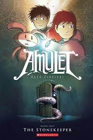
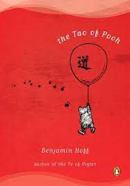
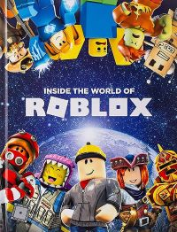
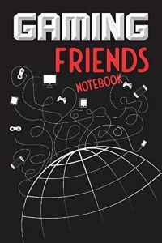
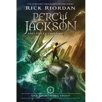

SuperCars Link!
Contacts!
▀▄▀▄▀▄𝘼𝙗𝙙𝙪𝙡'𝙨 𝘼𝙢𝙖𝙯𝙞𝙣𝙜 𝘾𝙤𝙙𝙞𝙣𝙜 𝙋𝙖𝙜𝙚!▄▀▄▀▄▀
My favourite Hobbies!
- Youtube Video's
- Gaming
- Soccer
- Organizing
- Basketball!
A little story I made!
Kyle is panting as he sprints down the isle that cranks a bit, with a red face panting for air his blue hair stumbles in his eyesight, he hops on the boat that waddles before anyone could catch him, then he looks back to see his observers say "Come back you scaredy cat!". As he drifts away to the southern side of the ocean, he listens to a soft beautiful voice that has birds chirping and the waves brushing against his boat, he glances down at the edge and see's how tall the boat is with a black interior. He randomly sees an island and scratches his head for a bit. He takes a huge look in front of him and stands with his red straw hat that has a pirate symbol on it, as he move's forward, he feels a gust of wind pushing behind him as if he was floating.
As he parks his large boat he hears a Rattle! In a bush, he moves forward to see what was there, but then he looks at an animal with a strong black body and a huge black tail, with green eyes as bright as an emerald, Kyle could tell it was strong because of how tall it was. He doesn't get a clear view of it but brushes it off as if it was nothing, and spots it waddling away like a penguin. Kyle then dusts himself with some water as he takes deep breaths *inhale* *outhale*, then he washes his face thinking to himself while scratching his head about how he got there.
Kyle suddenly feels a rush of energy coming and rushes onto the island, he keeps running and closes his eyes until his legs are red from his hard surroundings. He hears a huge PURR! And relates to his fluffy grey cat at home, but then he soon realizes that cats don't live on islands. He says to himself "If that's not a cat that's a" "PUMMMA RUNN!" As he fully sprints ahead for his life he stumbles upon a flyer on the way that wacks him on the head, he glances at it and reads out "Kyle found dead or alive bounty $10 000 000! Keep your eyes peeled".
Kyle now knows why those crusty, dusty, musty bandits were chasing him and that was because they just wanted the money. Kyle runs for what seems like an eternity and comes to the end of the island and repeats, "No way this island is that small there must be a catch to it!" He checks his surroundings as if he was in a movie and spots a weird looking stone, he stops for a second thinking about everything that had happened in his life.
Kyle puts his leg out and steps on the stone with pride, Crunch! Crackle! He glances up to see a floating castle and realizes that the stone opened up a mysterious pathway to some random castle. He walks ahead Crunch! As his shoe steps onto the sand, he runs and opens the castle gates revealing a sword in the middle.
He runs and dashes to the sword but lasers appear, he uses the martial arts skill that his master taught him, Wish! He is already on the other side and picks up the sword as his hand starts to glow. The building starts to crumble so he dashes for the exit, he is so close but he knows he is not going to make it yet he believes himself, the sword senses his courage and boosts him forward as he blasts and makes an impact on the sand. Blurriness starts to come as he closes his emerald eyes and doses off like a bear in hibernation.
Blurriness starts to fade as he awakes with the sword in his hand realizing that he passed out, his newfound sword points him in a random direction and he blasts through the sea. He suddenly reaches his hometown a realizes that magic is destroying his town, and he needs to find who is creating havoc. He thinks to himself and knows that fairy's are the only beings that can use magic, with the help of the townspeople they lead him to the victim.
He says that he will curse the fairy forever for all the destruction she has caused, but she just laughs in dissatisfaction and casts a spell at him. He dodges the attack and uses his sword to leap forward and manages to cut the fairy's arm, she screeches in pain and casts a portal escaping the scene.
Kyle gets rewarded and his bounty taken away for saving his town even after all they have done for him, he takes his reward and gets known as the hero of the town for centuries.
About me!
I am a gamerboy and I love playing games, I am also kind and I love math.I am also good at soccer and I love sports, you can call me Ab for short(not meaning Alberta). Also I have many amazing friends such as Leo and Ayub and Zainab.
books
- Amulet

- The Tao of Pooh

- Roblox

- Gaming friends

- Jackson and the Olympians

Video's of my channel!
- Acting
- Soccer
- Gaming
- Youtube
- Basketball
Skills
| Gaming |
🌠🌠🌠🌠🌠
|
| Soccer |
🌠🌠🌠🌠🌠
|
Basketball |
🌠🌠🌠
|
Math |
🌠🌠🌠🌠🌠
|
Foosball |
🌠🌠🌠
|